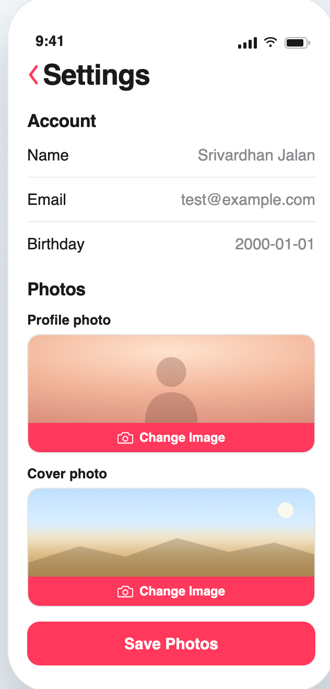

Zero to Shipped · 06
Photos that can't leak.
A profile photo and a cover, private the moment you set them.

Photos Without the Exposure.
@srivardhanjalan · swipe →
The worry
A photo online ends up everywhere.
A shared link, a screenshot, an old upload that never dies. You lose track of where your face lives.
What we built
Here, they stay yours.
Set a profile photo and a cover. There is no public link, so there is nothing to leak.
Private, not hidden
And they still show up instantly.
Private does not mean locked away from you. Your photo loads the moment you open the app, every time.
Nothing left behind
Change your mind? It just disappears.
Start a new photo, walk away, and it quietly vanishes. Only the one you save ever sticks.
The payoff
So your face stays yours.
No stray copies, nothing on the open web, nothing you didn't choose. Just your photo, where you put it.
Zero to Shipped · 06
Read the full build, free on Medium.
A wishlist app, built one shippable step at a time.